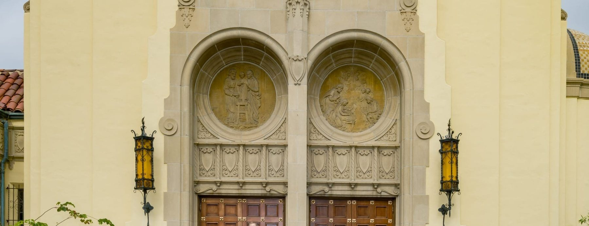

Skip to content
IN DEVELOPMENT — ThinkFirst Studios · not live
Faith Formation for Children at Holy Family Church
A Partnership with the Domestic Church
Menu
Home
Religious Education 2026-27
Our Ministry
Our Classes
Evangelization for Kids
More…

More Resources…
Catholic Websites
The Seven Sacraments
Preparation for the Sacraments
Catholic Social Teaching
Safeguard the Children
Sowing Seeds
Registration
Call 626-403-6118